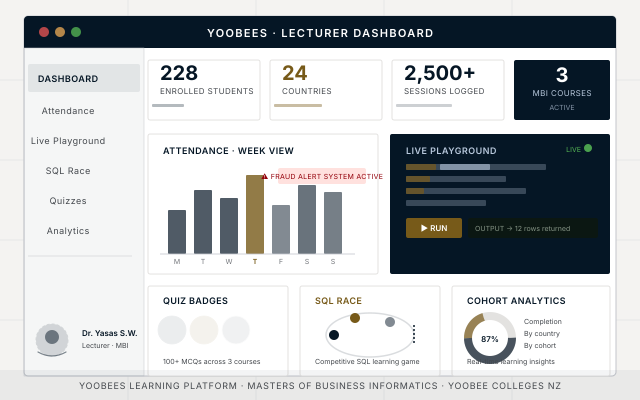
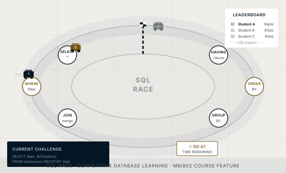

I design experiential, technology-forward classrooms — and build the platforms that power them. My teaching practice at Yoobee Colleges is inseparable from YooBees, a real-time learning platform I created to bring attendance, live coding, competitive SQL, and AI-assisted reasoning into every session.

YooBees is a full-stack web application I designed and built from scratch to serve the Masters of Business Informatics (MBI) programme at Yoobee Colleges. It replaces static slide decks and paper registers with a live, interactive, data-driven classroom experience.
Every feature was shaped by a real classroom problem — from fraudulent attendance submissions caught by three detection algorithms, to students competing on SQL queries in real time.
OPEN-SOURCE · GITHUB.COM/URESHAN2011/YOOBEES
Students check in with a single tap. Three detection algorithms run in real time to flag dishonest submissions: shared-IP clustering (multiple students on one device), GPS outlier detection (coordinates >500 m from campus), and a rapid-submission window (check-ins within 30 s of session open).
An in-browser code execution environment embedded directly in lectures. Students write and run SQL, Python snippets, and pseudocode without leaving the platform — and I can see their output live.
Students race around a virtual track by solving SQL challenges in sequence — SELECT → WHERE → JOIN → GROUP BY → ORDER BY → HAVING. A live leaderboard drives friendly competition and keeps engagement high across 228 students.
Over 100 MCQ questions across all three MBI courses. Students earn badge tiers as they progress, with instant feedback and explanations. Results feed directly into the lecturer analytics dashboard.
A daily collaborative challenge pairs students across cohorts to solve a shared problem together. Designed to build cross-cultural communication skills in an international classroom spanning 24 countries.
A lecturer-only dashboard surfaces attendance trends, quiz completion rates, country-level engagement, and fraud alert history — giving me a full picture of each cohort without manual data wrangling.

SQL Race transforms database exercises into a live, multiplayer competition. Each checkpoint on the track corresponds to a core SQL clause. Students only advance by writing a correct query — keeping the learning rigorous while the format keeps energy high.
It was born out of a simple observation: students who were bored by textbook drills became intensely focused the moment there was a leaderboard.
Slide-by-slide lessons I use in class, free to work through here. Each one has a full written version alongside the interactive deck.
Covers the strategic role of information systems in organisations — from IS alignment and SISP (Strategic Information Systems Planning) to digital transformation frameworks and Porter's competitive models.
✦ PLATFORM FEATURE
SISP Prompt Lab — an AI-assisted tool embedded in YooBees that walks students through strategic IS planning exercises using guided prompts and real case data.
A hands-on deep-dive into relational database design, SQL from basics to advanced joins and stored procedures, ER diagram methodology, normalisation theory, and an introduction to NoSQL paradigms.
✦ PLATFORM FEATURES
SQL Race — competitive live query challenges. Live Playground — in-browser SQL execution environment for practice and demonstrations.
Covers the full project lifecycle — initiation, planning, execution, monitoring, and closure — with a strong practical emphasis on Agile methodologies, Scrum ceremonies, stakeholder management, and risk frameworks.
✦ PLATFORM FEATURE
Case Study Labs — students manage a simulated IT project via YooBees, tracking sprints, updating risk registers, and submitting deliverables with structured peer review.
Considering applying? Read my guide for prospective students →
My approach to education is grounded in experiential and constructivist learning — I believe students learn best by building, failing, iterating, and reflecting. Every feature in YooBees was designed around this principle: the Live Playground lowers the barrier to trying, SQL Race makes failure feel like just one more lap, and badge tiers reward persistence over perfection.
I prioritise purpose-driven education: helping students not just acquire technical skills, but develop the vision and initiative to use them meaningfully. In a classroom spanning 24 countries, that also means building cultural fluency and collaborative communication into every assignment — not just technical competence.
"If we can change the way we see the world, we can change the world we see."
Workshops on AR application development.
Prompting for Security: LLM Code Generation in Angular.
Trust and trustworthiness while exchanging virtual items in shared augmented reality. doi.org/10.26021/15296 ↗
Reimagining Medical Education with VR in Emerging Medical Disciplines.
The Master of Business Informatics (MBI) — specifically MBI800 Business Information Systems, MBI802 Database Management Systems, and MBI804 IT Project Management, across the Auckland and Christchurch campuses.
No. This page is Dr. Yasas Sri Wickramasinghe's own account of the courses he teaches, not an official Yoobee College page. For admissions, fees or enrolment, contact Yoobee College directly.
See his guide for prospective students for programme facts, his teaching approach, and a free consultation link.